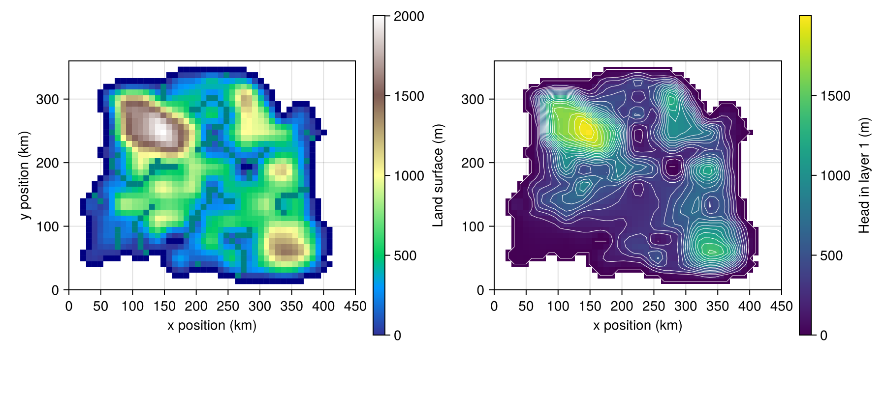
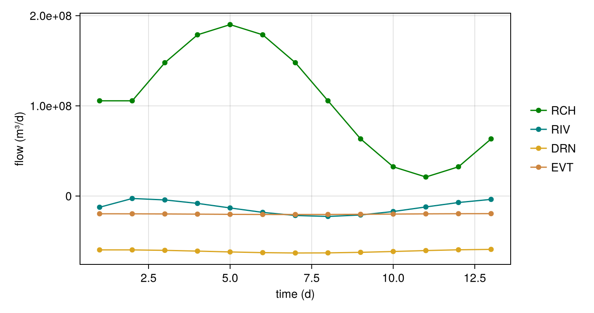
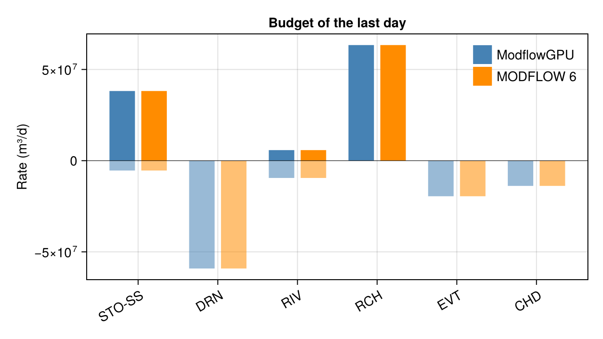
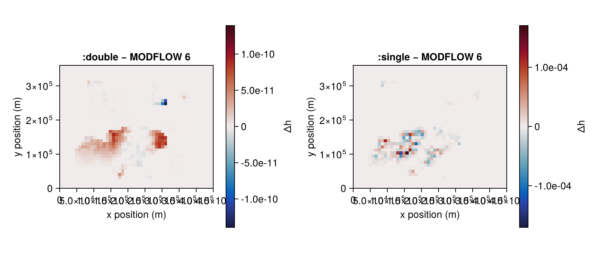

A coupling-type model, step by step
ModflowGPU was built to run inside a coupled model: a hydrological model that, every day, gives MODFLOW the recharge and the river stages, and takes back the baseflow to the rivers and the capillary rise. This page runs a small model of that kind with the stepping API, one daily time step at a time, and reads the flows of the river (RIV), drain (DRN) and evapotranspiration (EVT) packages after each step, as a coupled model would. It has no counterpart in the MODFLOW 6 examples.
The model is the synthetic test model of ModflowGPU (benchmark/synthetic.jl in the repository) at its smallest size: an island of 50 × 40 cells of 9 km with two confined layers, a constant head of 0 m (sea level) in the ocean cells along the coast, a terrain with a river network, and log-normally distributed K over more than five orders of magnitude. Every land cell has recharge (RCH) and evapotranspiration (EVT, 1 mm/d with an extinction depth of 2 m below the land surface); the cells of the river network have a river (RIV), the other land cells a drain (DRN) below the surface. The storage coefficient is given directly (STORAGECOEFFICIENT). One steady-state day is followed by 12 daily transient periods in which the recharge and the river stages change. The same model at the size of the Indus basin and of the globe is used for the performance measurements.
The model and the MODFLOW 6 run
write_synthetic writes the model as MF6 input files, with the tight closures of the parity tests; ExampleTools (docs/ExampleTools.jl) runs MODFLOW 6.8.2 on it for the comparison below.
using ModflowGPU, CairoMakie
dir = joinpath(cache_dir(), "runs", "synthetic-tiny")
isdir(dir) && rm(dir; recursive = true)
write_synthetic(dir, :tiny)
mf6_time = mf6_run(dir)
filter(f -> !startswith(f, "mf6-"), readdir(dir))19-element Vector{String}:
"mfsim.lst"
"mfsim.nam"
"syn.cbc"
"syn.chd"
"syn.dis"
"syn.dis.grb"
"syn.drn"
"syn.evt"
"syn.hds"
"syn.ic"
"syn.ims"
"syn.lst"
"syn.nam"
"syn.npf"
"syn.oc"
"syn.rch"
"syn.riv"
"syn.sto"
"syn.tdis"Running it step by step
initialize builds the model (here on the CPU; pass backend = select_backend("auto") for a GPU). In the time-step loop, the stresses of a step could be set after prepare_time_step (with set_value on addresses such as SYN/RIV/BOUND); here the stresses of the input files are kept, and the simulated flows of each package (SIMVALS, positive into the aquifer) are summed after do_time_step. The loop also writes the head and budget files, as OC asks, for the comparison with MODFLOW 6.
function run_steps(dir, precision)
outdir = mkpath(joinpath(dir, "modflowgpu-$precision"))
flows = Dict(p => Float64[] for p in ("RIV", "DRN", "EVT", "RCH"))
times = Float64[]
t = @elapsed begin
sim = quietly(() -> initialize(dir; precision, outdir)) # hide the Info messages
while get_current_time(sim) < get_end_time(sim)
prepare_time_step(sim)
# ... set the stresses of this step here, e.g. set_value(sim, "SYN/RIV/BOUND", bound)
do_time_step(sim) || error("time step did not converge")
finalize_time_step(sim)
push!(times, get_current_time(sim))
for p in keys(flows)
push!(flows[p], sum(get_value(sim, "SYN/$p/SIMVALS"))) # m³/d
end
end
budgets = copy(sim.budgets)
finalize_simulation(sim)
end
files = Dict(ext => joinpath(outdir, "syn.$ext") for ext in ("hds", "cbc", "lst"))
result = (; head_file = files["hds"], budget_file = files["cbc"], listing_file = files["lst"], budgets)
return (; result, time = t, times, flows)
end
runs = Dict(p => run_steps(dir, p) for p in (:double, :single))
r = runs[:double]
r.times13-element Vector{Float64}:
1.0
2.0
3.0
4.0
5.0
6.0
7.0
8.0
9.0
10.0
11.0
12.0
13.0The model area and the heads
The land surface with the constant-head cells of the coast (blue) and the river cells (teal); all other land cells have a drain. Then the heads in layer 1 at the end of the simulation.
g = read_dis_grid(dir)
land = [g.idomain[c, rr, 1] > 0 ? g.top[c, rr] : NaN for c in 1:g.ncol, rr in 1:g.nrow]
fig = Figure(; size = (900, 400))
ax = Axis(fig[1, 1]; aspect = DataAspect(), xlabel = "x position (km)", ylabel = "y position (km)", xtickformat = v -> intformat(v ./ 1000), ytickformat = v -> intformat(v ./ 1000))
hm = map_heatmap!(ax, g, land; colormap = :terrain)
map_cells!(ax, g, filter(c -> c[1] == 1, budget_cells(g, r.result.budget_file, "CHD")); color = BC_COLORS["CHD"])
map_cells!(ax, g, budget_cells(g, r.result.budget_file, "RIV"); color = BC_COLORS["RIV"])
limits!(ax, extrema(g.xe)..., extrema(g.ye)...)
Colorbar(fig[1, 2], hm; label = "Land surface (m)")
h = read_head(open_head_file(r.result.head_file), length(r.times))
ax = Axis(fig[1, 3]; aspect = DataAspect(), xlabel = "x position (km)", xtickformat = v -> intformat(v ./ 1000), ytickformat = v -> intformat(v ./ 1000))
hm = map_heatmap!(ax, g, layer_values(h, 1); colormap = :viridis)
map_contour!(ax, g, layer_values(h, 1); levels = 0:100:2000, color = :white, linewidth = 0.5)
limits!(ax, extrema(g.xe)..., extrema(g.ye)...)
Colorbar(fig[1, 4], hm; label = "Head in layer 1 (m)")
save_figure(fig, "synthetic-tiny-map")
Flows over time
The flows of the packages per day, as read through the stepping API in the loop above (negative: out of the aquifer). Day 1 is the steady state. The rivers and drains take the baseflow; EVT removes water where the water table is within 2 m of the surface.
fig = Figure(; size = (720, 380))
ax = Axis(fig[1, 1]; xlabel = "time (d)", ylabel = "flow (m³/d)", ytickformat = expformat)
for (p, c) in (("RCH", :green), ("RIV", BC_COLORS["RIV"]), ("DRN", :goldenrod), ("EVT", BC_COLORS["EVT"]))
scatterlines!(ax, r.times, r.flows[p]; label = p, color = c)
end
Legend(fig[1, 2], ax; framevisible = false)
save_figure(fig, "synthetic-tiny-flows")
The budget of the last day, from ModflowGPU and from MODFLOW 6 (rates in and out per package, from the listing files):
mf6_budget = last(read_listing_budgets(joinpath(dir, "syn.lst")))
ours = last(read_listing_budgets(r.result.listing_file))
save_figure(budget_bars(["ModflowGPU" => ours, "MODFLOW 6" => mf6_budget]; unit = "m³/d", title = "Budget of the last day"), "synthetic-tiny-budget")
Comparison with MODFLOW 6
The head differences in layer 1 at the end of the simulation, in both precisions.
h6 = read_head(open_head_file(joinpath(dir, "syn.hds")), length(r.times))
d = [":$p − MODFLOW 6" => read_head(open_head_file(runs[p].result.head_file), length(r.times)) .- h6 for p in (:double, :single)]
save_figure(difference_map(g, d; xlabel = "x position (m)", ylabel = "y position (m)"), "synthetic-tiny-difference")
The largest head and budget differences over all cells and days, next to the values of the row synthetic tiny of the parity table (which runs the same model with run_simulation), and the wall times (CPU: this build, the whole stepping loop including initialize; GPU: the parity table, AMD Radeon RX 7800 XT).
stats = Dict(p => (; cmp = compare_with_mf6(dir, runs[p]), runs[p].time) for p in (:double, :single))
comparison_table("synthetic tiny", stats)| Preset | max |Δh| (m), this build | max |Δh| (m), parity table | Budget, this build | Budget, parity table | CPU time, this build (s) | GPU time, parity table (s) |
|---|---|---|---|---|---|---|
:double | 1.4e-10 | 1.1e-10 | 2.9e-12 | 3.0e-12 | 4.96 | 0.10 |
:single | 1.7e-04 | 1.7e-04 | 2.7e-05 | 2.7e-05 | 7.64 | 1.16 |
Budget: the largest difference of a budget-file flow or a listing-table rate, relative to the total inflow of its time step.